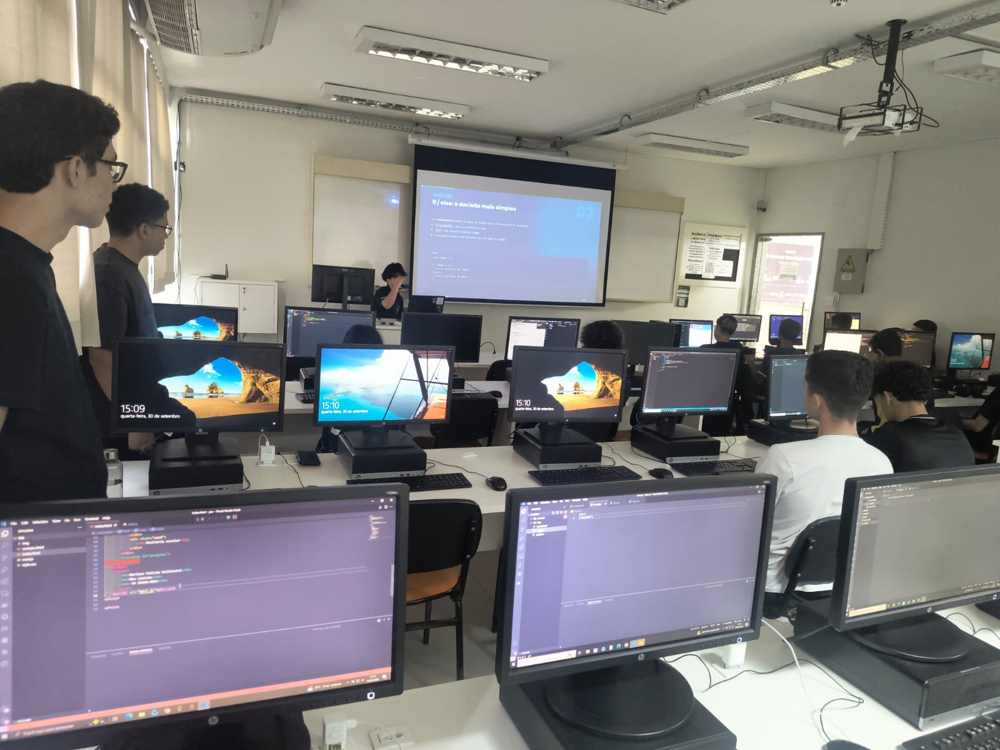

Projetos desenvolvidos no colégio(ensino médio)

No meu antigo colégio durante o segundo ano a direção da decidiu junto ao Senai criar um laboratório de informatica para que os aluno e professores pudessem utilizar. Eu e meus colegas de classe ajudamos a instalar por volta de 25 computadores e montamos todos os cabos de rede par trançados com a ajuda de um professor e realizamos a sua instalação.

Minha turma formou uma equipe junto com um professor para desenvolvermos um sistema de votação digital, o professor se encarregou do banco de dados, eu realizei a parte visual do sistema e meus colegas a conexão do backend com o frontend.

Eu e meus colegas criamos o modelo de um site para a nossa escola, esse site seria vinculado com um projeto de sistema de votação digital(foi utilizado para fazer a eleição do grémio estudantil da nossa escola) e um sistema de enquete para decidir eventos, comida em dias especiais entre outros...
Projetos desenvolvidos na Faculdade

Na UniFil no meu primeiro ano da faculdade participei de dois projetos o Londrinense Tech e Pensamento Computacional. No Londrinense Tech atuei como monitor de uma turma com aproximadamente 60 alunos do 6° do Colégio Londrinense, o objetivo desse programa é ensinar logica de programação, introdução a programação utilizando uma pseudo linguagem(Portugol) e uma introdução a JavaScript para os alunos se familiarizarem com uma linguagem de programação.

No pensamento computacional também atuo como monitor e nesse projeto ensinamos jovens do ensino médio a criarem paginas com html, css, javascript e aprenderem logica de programação.